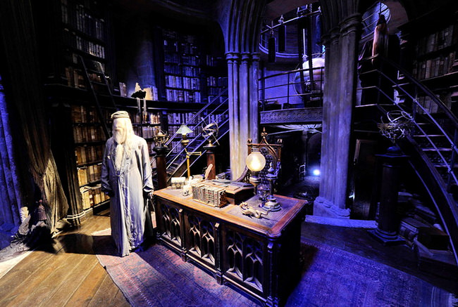

Музей Гарри Поттер
Студия расположена в получасе езды от Лондона в пригороде Ливсден. Экспозиция музея состоит из множества комнат, костюмов и реквизитов, которые сохранены в том же виде, что и при съемке фильмов.
На территории двух огромных съемочных павильонов и на открытой площадке можно увидеть потрясающие декорации, например, огромный макет школы волшебства и чародейства Хогвартс, посетить спроектированный кабинет профессора Дамблдора, дом Гарри Поттера и дом Дурслей, деревню Хогсмид с Визжащей хижиной и совиной почтой.
А также можно посидеть за обеденными столами всех четырех факультетов в Большом Зале, увидеть летающий автомобиль мистера Уизли, чертежи и макеты к фильму, Косой переулок со всеми тамошними магазинчиками, специально созданные для съемок портреты директоров Хогвартса, Волшебную шляпу, меч Гриффиндора и другие магические реквизиты, полакомиться в «Сладком королевстве» различными сладостями и попить сливочного пива в баре «Три метлы».
И это далеко не все, что ждет вас во время экскурсии по этой огромной киностудии.
Перед посетителями откроются многие тайны: например, как использовались при съемках спецэффекты, которые сделали сцены из фильмов настолько зрелищными, что мы легко поверили в существование этого волшебного мира.
Обратим внимание на то, что экспозиции музея в большей степени интересны тем, кто хорошо знает историю Гарри Поттера по книгам и фильмам. Происходит как бы погружение в волшебную атмосферу фильмов, и заново переживаются вместе с героями любимого фильма все захватывающие события.
Просто развлекательных экспозиций совсем немного. Детям очень нравятся интерактивные экспонаты: например, возможность управлять дистанционно волшебными вязальными спицами миссис Уизли или волшебным ершиком. Впечатляют сцены с монстрами из книги «Чудовищная книга о чудовищах» (The Monster Book of Monsters).
На экскурсию по музею уходит, примерно, 3-4 часа. Но, попав внутрь кинокомплекса, можно бродить по его павильонам неограниченное время, хоть весь день. Поэтому, если никуда особо не торопитесь, лучше оставить для осмотра времени побольше.
Начинается наше путешествие в волшебный мир с небольшого вестибюля, из которого попадаешь в павильоны. Здесь же, в ожидании очереди, можно взять аудиогид на русском языке и присмотреться к сувенирам в сувенирных магазинчиках. Лучше сразу их не покупать, чтобы не носить на протяжении всей экскурсии. Тем более что в конце осмотра тоже есть сувенирные магазины, где уже на выходе и можно приобрести все, что понравилось.
Все начинается с небольшого вступления об истории создании фильма. Затем с экрана кинотеатра британский актер Дэниел Рэдклифф, который сыграл в фильме роль Гарри Поттера, и другие актеры рассказывают о том, как проходили съемки. И в конце небольшого фильма актеры предлагают зрителям увидеть своими глазами, каков он этот волшебный мир Хогвартса.
И дальше вы словно попадаете в волшебную сказку.
Обычно осмотр начинается с Основного зала. В этом зале происходили съемки всех фильмов на протяжении более 10 лет.
Работники студии с удовольствием делятся своими киношными секретами.l
Здесь вы узнаете, каким образом вдруг оживают на стенах портреты, а можно виртуально отправиться в небольшое путешествие на магической метле.
С помощью компьютерной графики и спецэффектов создается иллюзия пространства и объема в помещениях и верится в реальность существования многих улиц, 3-х этажного автобуса и городских эпизодов из фильмов.
Можно прогуляться в Косом переулке с многочисленными магазинчиками. Правда, все они закрыты и руками ничего трогать нельзя.
А экспозиция всевозможных масок, уродливых чудовищ, магических предметов, вымышленных «живых» предметов и персонажей усиливают смешанное чувство, в котором реальность так тесно переплетается с волшебным миром.
Совершенно удивительный экспонат – это замок школы Хогвартс, который находится в отдельном помещении. Вернее, это всего-навсего макет, высота которого – 2-2,5 метра.
Как купить билеты в музей Гарри Поттера
Заказ и покупка билетов на киностудию Warner Bros. имеет свои особенности. Билеты нужно покупать заранее и только на официальном сайте музея или на сайте Управления по туризму Великобритании. На месте их купить невозможно, так как они там просто не продаются.
Стоимость билетов в Музей Гарри Поттера на 2021/2022 годы:
- Взрослый билет (от 16 и старше) – 47£
- Детский (от 5 до 15 лет) – 38£
- Детский (от 0 до 4 лет) – бесплатно (бесплатные билеты также нужно бронировать на сайте)
- Семейный (2 взрослых + 2 ребенка или 1 взрослый + 3 ребенка) – 150£
- Полный пакет (билет, путеводитель и цифровой гид): 56,95£ – для взрослого и 47,95£ – для ребенка.
Сразу же можно заказать сувенирный путеводитель и забронировать цифровой гид на том языке, который вам нужен (доступен на 8 языках, в том числе и на русском). Причем, если без путеводителя можно обойтись, то цифровой гид, скорее всего, потребуется. По желанию можно заказать экскурсию с русскоговорящим гидом.
После оплаты билетов к вам на почту придет подтверждение бронирования. Его нужно распечатать и взять с собой в поездку. На студии в кассе нужно будет предъявить эту распечатку и документ, удостоверяющий личность. Вам выдадут билет и, если вы заказывали, цифровой гид и путеводитель.
Время работы музея Гарри Поттера зависит от времени года:
- Первая экскурсия с 9 или с 10 часов утра
- Последняя – с 16.00 до 18.30 (студия закрывается через 3 часа от начала последней экскурсии).